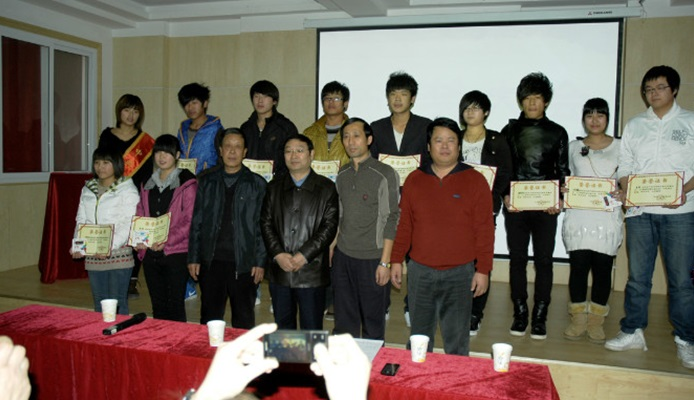
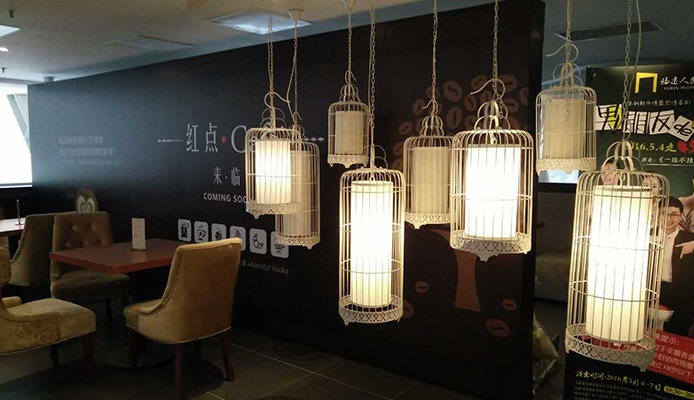

  目前，众多企业缺的不是理论型人材和管理型人才，而是既有理论知识、又具实践操作能力的专业技术人才。 在近几年的大学生就业中，严重存在着“管理人才难找，工程师、设计师更难求”的问题，大学毕业生难于就 业的根本原因就是没有一技之长。中关村学院景秀校企合作中心开办的大学生岗前实训班，其宗旨就是要帮 助更多的大学毕业生解决就业难、高薪就业更难的问题，帮助他们顺利实现对口高薪就业。可以说，中关村 学院景秀校企合作中心大学生岗前实训班是大学毕业生实现对口高薪就业的一个极好的平台！